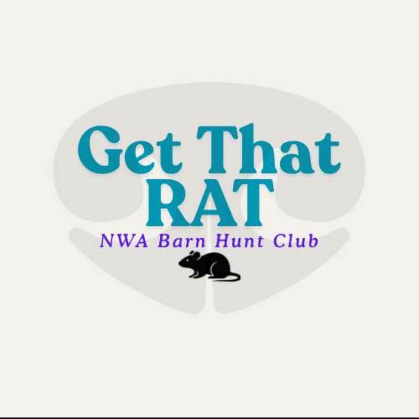
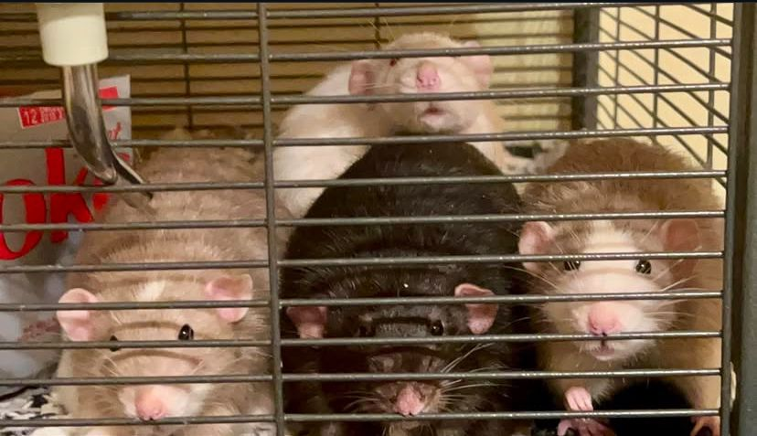
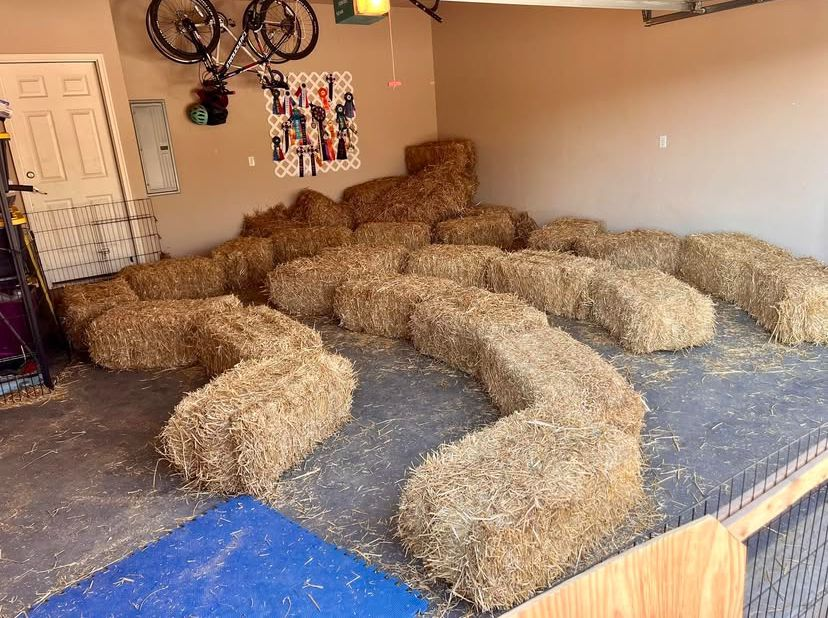

Barnhunt Trial Levels
Novice
At the Novice level your dog will find one rat, complete a climb, and travel through one straight tunnel within two minutes.
Open
At the Open level your dog will find two rats, complete a climb, and travel through a tunnel with one turn within two minutes and 30 seconds.
Senior
At the Senior level your dog will find 4 rats, complete a climb, and travel through a tunnel with one or two turns within three minutes and 30 seconds.
Master
At the Master level your dog will find 1 - 5 rats, complete a climb, and travel through a complex tunnel within four minutes and 30 seconds. The number of rats that your dog will need to find will be chosen without the knowledge of the handler.
Crazy 8s
Crazy eights is a special type of event seperate from the rest where the dogs are challenged to find as many of the 8 rats as they can within 2 minutes. The more rats they find, the more points they'll earn! Due to not having enough rats and tubes it will not be possible to fully practice crazy eights. Should you wish to sign up to practice Crazy 8s please let us know directly.


